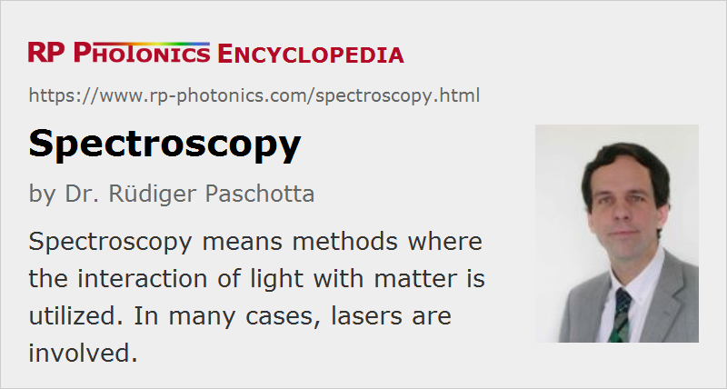

Spectroscopy
Definition: methods where the interaction of light with matter is utilized, e.g. for detecting substances or measuring concentrations
More specific terms: laser spectroscopy, laser absorption spectroscopy, intracavity laser absorption spectroscopy, photoacoustic spectroscopy, time-resolved spectroscopy, fluorescence spectroscopy, Fourier transform spectroscopy, infrared spectroscopy, Raman spectroscopy
Categories: light detection and characterization, optical metrology, methods
How to cite the article; suggest additional literature
Author: Dr. Rüdiger Paschotta
The term optical spectroscopy denotes methods where the interaction of light with matter is utilized. Usually, the strength of some interaction is measured as a function of the wavelength or optical frequency; i.e., the optical spectrum plays an important role.
This article deals only with optical spectroscopy; there are various other areas such as particle spectroscopy.
The purpose of spectroscopy is often to detect certain substances or to measure their properties. For example, gas spectroscopy is often used for measuring the concentrations of trace gases or the temperatures of gases. In other cases, known properties of substances are used for the purposes, e.g. for realizing optical frequency standards. The term spectrometry instead of spectroscopy is sometimes used in order to emphasize that certain quantities are measured in a quantitative manner.
There exists a very wide range of very different spectroscopic methods; this article can give only a course overview. Many of the modern spectroscopic methods involve one or several lasers and are then called laser spectroscopy. Due to the enormous potentials of lasers in terms of temporal and spatial coherence, narrow linewidth and wavelength tunability, optical power (particularly peak power), ultrashort pulse generation etc., the field of spectroscopy has been widened very substantially since the advent of lasers. Even before that time, spectroscopy has delivered invaluable insight into many phenomena; for example, it allowed researchers to study the interior of the sun and discover helium there, even before it was found on earth.
See also the more specific articles on laser spectroscopy and laser absorption spectroscopy.
Exploited Physical Effects
Absorption of Light
Different interactions between light and matter can be utilized in spectroscopy. The most commonly used interaction is the absorption of light (→ absorption spectroscopy). For example, atoms and molecules exhibit distinct absorption features, so that different atoms or molecules can easily be distinguished if the absorption versus wavelength is measured. Particularly in the mid-infrared spectral region, molecules have relatively strong and narrow absorption lines related to their vibrational and rotational modes. This allows one to detect a wide range of substances with a very high sensitivity. An example for an application is the detection of tiny concentrations of air pollutants.
As molecules can have many different absorption lines, some of which may overlap for different species, detection of a single line is often not sufficient for discriminating between different molecules. Recording the absorption spectrum for some sufficiently wide wavelength range, however, often results in a clear spectroscopic finger print. One may also distinguish different isotopes.
The mid-infrared spectral region is quite ideal for sensitive spectroscopy e.g. of many gases, such as air pollutants. Unfortunately, mid-infrared laser sources are typically less powerful and/or more complicated and expensive than near-infrared laser sources. For example, one may apply difference frequency generation in nonlinear crystal materials, requiring two input wavelengths and often leading to quite low optical powers. Other challenges are that it is more difficult to obtain optical materials with high transmission at long wavelengths and also sensitive photodetectors. Therefore, one often exploits overtones, i.e., absorption lines at higher optical frequencies, corresponding to shorter wavelengths, where suitable laser sources are more easily realized and better photodetectors are available (in the extreme case, even for photon counting). However, such overtone absorption bands are weaker and thus often result in a lower sensitivity.
Absorption measurements are often done with spectrophotometers. Such instruments can cover large wavelength ranges and provide a reasonably high wavelength resolution. However, they can utilize only a quite limited propagation length in a medium and are therefore not suitable for substances with very low absorbance.
A low absorption coefficient can still allow for a high sensitivity if the pass length of light is increased accordingly. Therefore, one uses multipass gas cells, where a long path length can be realized in a still relatively compact cell. This principle, however, allows a large number of passes only if the light is a relatively high spatial coherence. Therefore, multipass absorption cells are most effective in combination with lasers.
Laser absorption spectroscopy also has the advantage of substantially higher wavelength resolution, since the linewidth of a laser can be far smaller than the resolution of the spectrometer. A welcome side effect of improved resolution is that the sensitivity for narrow-band absorption features is also much improved.
There are also resonant techniques, where one uses absorption inside a passive optical resonator (e.g., cavity ring-down spectroscopy) or within the laser resonator (intracavity laser absorption spectroscopy). In the latter case, one may e.g. use a broadband fiber laser, where the output spectrum is detected for some time after applying a short pump pulse. Even weak absorption features can lead to pronounced dips in the measured spectrum as that absorption applies in many subsequent resonator round-trips.
Spectroscopy is not only applied to microscopic particles, but also to macroscopic objects such as optical resonators. For example, a high-finesse stable optical resonator can be used as an optical frequency standard and probed with spectroscopic methods.
Other Effects of Absorption
Usually, the measured effect in spectroscopy is the reduction in optical power due to the absorption. However, there are also other possibilities. For example, in photoacoustic spectroscopy one exploits the generation of sound by absorption of light from a power-modulated source. The absorbed light leads to some heating, which causes expansion of the gas and thus generates a sound wave, which can be detected with a sensitive microphone.
Emission or Scattering of Light
Matter can also be exited to emit or scatter light with characteristic features. This is already possible with simple heating or by illumination with sun light. For example, a spectrometer on a satellite may record spectra of scattered light from the earth surface in order to distinguish rocks, plants, lake surfaces, etc.
In astronomy, one analyzes the optical spectra of light from distant stars and galaxies, which carries information on temperatures, chemical compositions, speed of movement etc. In laboratories, one often uses a gas discharge for exciting atoms or molecules such that they radiate light.
Many advanced spectroscopic methods use the illumination of a sample with a laser source. The absorbed light may not only lead to heating, but also excite atoms or molecules, which then subsequently emit fluorescence light. One may record the spectrum of the emitted light and/or the strength of excitation as a function of the wavelength of the pump light; both methods can lead to highly specific detection of certain substances or allow one to measure certain microscopic properties of materials. For more details, see the article on fluorescence spectroscopy.
Another option is laser-induced breakdown spectroscopy, where one excites a sample with intense laser pulses, forming a plasma, and detects light then emitted by the sample in the visible and/or infrared spectral region.
An example for such methods is the investigation of laser gain media. A laser beam with suitable optical frequency can excite laser-active ions into metastable states, from which they may be further excited (for sufficiently high optical intensities) or get back to the ground state, emitting fluorescence light. The fluorescence spectrum is related to the wavelength-dependent emission cross sections, which are relevant for the achievable laser gain. One may also detect the decay of fluorescence intensity after excitation with a short laser pulse in order to determine the upper-state lifetime. With a combination of spectroscopic techniques, one may achieve a comprehensive characterization of the physical details of laser gain media such as laser crystals or rare-earth-doped fibers [8]. One may even study subtle effects such as interactions between different laser-active ions, leading to energy transfer phenomena.
Another example is Raman spectroscopy, where a substance is irradiated with narrow-band light at a high optical power level (usually obtained from a laser), and one detects the weak emission of light with slightly longer wavelengths, which arises from spontaneous and/or stimulated Raman scattering, a kind of inelastic scattering. The spectrum of Raman-scattered light (which is separated from the pump light with a special narrow-band dichroic optical filter such as Rugate filters) contains information on molecular vibrations. For more details, see the article on Raman spectroscopy.
High-energy LIDAR systems, as used e.g. in atmospheric research, allow remote spectroscopic measurements over large distances. Here, one may e.g. exploit Doppler shifts of back-scattered light, which reveal longitudinal wind velocities. A variety of methods has been developed which allow the remote measurement of many properties such as temperature, pressure, trace gas concentrations and cloud particle densities.
Changes of Optical Phase
In some spectroscopic methods, one exploits changes of the optical phase. Typically, an interaction of interest occurs in one arm of an interferometer. The resulting phase changes can be sensitively detected because they are turned into power changes at the interferometer output. Phase changes resulting from absorption lines are also relevant in frequency modulation spectroscopy.
Methods of Spectroscopy
Spectral Decomposition of Transmitted Light
One may use a broadband light source (white light source) and then apply a spectral decomposition in the photodetection system. Often, a high spectral sensitivity is obtained by combining the photodetector with some kind of monochromator. A high-resolution spectrometer, for example, allows measurements for many different narrow wavelength bins without precisely controlling a light source. The measurement time may be long if each wavelength is treated separated and there are many narrow wavelength bins, but some spectrometers can simultaneously record many wavelengths, e.g. when they contain a CCD array instead of a single photodiode.
A special way of obtaining spectral resolution is the use of an interferometer where an arm length is scanned during the measurement. With a narrow-band light source, that would result in a simple sinusoidal oscillation of the output power. With a broadband source, however, one obtains a superposition of many different oscillations. Using a Fourier transform, one can retrieve the spectrum. (Interferometric wavemeters have a similar working principle.) Such methods are called Fourier transform spectroscopy. This is often applied in the infrared spectral region and then also called Fourier transform infrared spectroscopy (= FTIR spectroscopy). Many modern infrared spectrometers are based on such techniques.
Variation of the Source Wavelength
In many cases, spectroscopy is done with a wavelength-tunable light source. (Various such sources are discussed below.) One may then, for example, measure the absorption of a sample as a function of the emission wavelength of the laser. As it is more difficult to make a widely tunable narrow-band laser source, that technique often leads to a smaller tuning range – smaller than the range possible with a simple broadband light source. However, the method offers superior resolution and also rapid data acquisition with low noise, as one can obtain a relatively strong detector signal. Note that all available optical power is concentrated on a particular wavelength of interest, rather than spread over the whole measurement range.
As the optical power often somewhat varies with wavelength (and possibly also with time), a high precision requires monitoring of that power. This can be done, for example, in two-beam spectrometers, where the light from the source is split into two beams. Only one beam (the sample beam), but not the reference beam, is sent through the medium under investigation, and the powers or intensities of both beams are measured. Particularly high sensitivities can be obtained with balanced photodetectors, where one directly measures the difference of photocurrents from the two beams.
Exploitation of Nonlinear Effects
When high-intensity light sources (normally lasers) are used, one may exploit various nonlinear optical effects for spectroscopy. The saturation of absorption is exploited in Doppler-free laser spectroscopy. Raman spectroscopy has already been mentioned above. Two-photon absorption has been utilized for a long time [6]. Another important example is coherent anti-Stokes Raman spectroscopy (CARS), where two input waves generate a detected signal with slightly higher optical frequency via four-wave mixing. Various other nonlinear effects, such as Brillouin scattering, can be exploited with other methods.
Elimination of Doppler Effects
Atoms and molecules in gases can exhibit substantial Doppler broadening of their absorption lines due to their thermal motion. There are, however, various methods of Doppler-free spectroscopy. For example, this can involve counterpropagating laser beams, where a probe beam in one direction selects a certain velocity class via absorption saturation [1], and the other beam detects that saturation. This methods is called Doppler-free saturation spectroscopy [26].
Terahertz Spectroscopy
A relatively new field is terahertz spectroscopy [21], where terahertz radiation (with frequencies e.g. of hundreds of gigahertz to several terahertz) is used instead of light. Although lasers cannot directly emit terahertz radiation, they can be used in different waves for generating such radiation, e.g. by using techniques of electro-optic sampling or nonlinear frequency conversion. Also, ultrashort pulse lasers are useful for the time-resolved detection of terahertz waves. As many optically opaque materials have a substantial transparency for terahertz radiation, terahertz spectroscopy can be used for a wide range of investigations in science and technology. For example, it is now used for fault location in airplane parts and in security screenings.
Frequency Combs
Some techniques of modern laser spectroscopy employ frequency combs as generated with mode-locked lasers [15]. As such a frequency comb contains some number of exactly equidistant lines in the spectrum, all of its frequency components are known (apart from some noise) if only two parameters are fixed (possibly stabilized with some feedback techniques): the comb spacing, which is related to the pulse repetition rate, and the carrier–envelope offset frequency. Therefore, frequency combs can serve for extremely precise frequency measurements in wide wavelength ranges, if they are produced with a high optical bandwidth (sometimes more than octave-spanning) and with proper frequency stabilization. There are various important applications in frequency metrology (in particular, ultraprecise optical clocks) and other fields.
Time-resolved Spectroscopy with High Temporal Resolution
Spectroscopy may also involve time-resolved measurements with an extremely high temporal resolution. In pump–probe spectroscopy one uses an ultrashort pump pulse, followed by a probe pulse with a variable time delay between a few femtoseconds and several nanoseconds. The effect of the pump pulse on the sample and thus on the probe pulse can be measured as a function of the time delay, which is often adjusted simply via a variable optical delay line An alternative is to use to two mode-locked lasers with slightly different pulse repetition rates, so that a range of time delays is scanned continuously.
Suppliers
The RP Photonics Buyer's Guide contains 67 suppliers for spectroscopy equipment. Among them:
Questions and Comments from Users
Here you can submit questions and comments. As far as they get accepted by the author, they will appear above this paragraph together with the author’s answer. The author will decide on acceptance based on certain criteria. Essentially, the issue must be of sufficiently broad interest.
Please do not enter personal data here; we would otherwise delete it soon. (See also our privacy declaration.) If you wish to receive personal feedback or consultancy from the author, please contact him e.g. via e-mail.
By submitting the information, you give your consent to the potential publication of your inputs on our website according to our rules. (If you later retract your consent, we will delete those inputs.) As your inputs are first reviewed by the author, they may be published with some delay.
Bibliography
| [1] | W. R. Bennett, Jr., “Hole burning effects in a He–Ne optical maser”, Phys. Rev. 126 (2), 580 (1962), doi:10.1103/PhysRev.126.580 |
| [2] | P. W. Smith and R. Hänsch, “Cross-relaxation effects in the saturation of the 6328-Å neon-laser line”, Phys. Rev. Lett. 26 (13), 740 (1971), doi:10.1103/PhysRevLett.26.740 |
| [3] | T. W. Hänsch, M. D. Levenson and A. L. Schawlow, “Complete hyperfine structure of a molecular iodine line”, Phys. Rev. Lett. 26 (16), 946 (1971), doi:10.1103/PhysRevLett.26.946 |
| [4] | C. K. N. Patel, E. G. Burkhardt, and C. A. Lambert, “Spectroscopic measurements of stratospheric nitric oxide and water vapor” (an early demonstration of Lidar), Science 184, 1173 (1974) |
| [5] | C. Lin and R. Stolen, “New nanosecond continuum for excited-state spectroscopy”, Appl. Phys. Lett. 28, 216 (1976), doi:10.1063/1.88702 |
| [6] | J. N. Eckstein, A. I. Ferguson, and T. W. Hänsch, “High-resolution two-photon spectroscopy with picosecond light pulses”, Phys. Rev. Lett. 40 (13), 847 (1978), doi:10.1103/PhysRevLett.40.847 |
| [7] | G. C. Bjorklund et al., “Frequency-modulation spectroscopy”, Appl. Phys. B 32 (3), 145 (1983), doi:10.1007/BF00688820 |
| [8] | R. Wyatt, “Spectroscopy of rare earth doped fibres”, Proc. SPIE 1171, 54 (1989), doi:10.1117/12.963138 |
| [9] | T. W. Hänsch and B. Couillaud, “Laser frequency stabilization by polarization spectroscopy of a reflecting reference cavity”, Opt. Commun. 35 (3), 441 (1980), doi:10.1016/0030-4018(80)90069-3 |
| [10] | D. Grischkowsky et al., “Far-infrared time-domain spectroscopy with terahertz beams of dielectrics and semiconductors”, J. Opt. Soc. Am. B 7 (10), 2006 (1990), doi:10.1364/JOSAB.7.002006 |
| [11] | E. S. Polzik et al., “Spectroscopy with squeezed light”, Phys. Rev. Lett. 68 (20), 3020 (1992), doi:10.1103/PhysRevLett.68.3020 |
| [12] | K. J. Boller and T. Schroeder, “Demonstration of broadband intracavity spectroscopy in a pulsed optical parametric oscillator of beta-barium borate”, J. Opt. Soc. Am. B 10 (9), 1778 (1993), doi:10.1364/JOSAB.10.001778 |
| [13] | A. Kachanov et al., “Intracavity laser spectroscopy with vibronic solid-state lasers: I. Spectro-temporal transient behaviour of a Ti:sapphire laser”, J. Opt. Soc. Am. B 11 (12), 2412 (1994), doi:10.1364/JOSAB.11.002412 |
| [14] | A. Garnache et al., “High-sensitivity intracavity laser absorption spectroscopy with vertical-external-cavity surface-emitting semiconductor lasers”, Opt. Lett. 24 (12), 826 (1999), doi:10.1364/OL.24.000826 |
| [15] | R. Holzwarth et al., “Optical frequency synthesizer for precision spectroscopy”, Phys. Rev. Lett. 85 (11), 2264 (2000), doi:10.1103/PhysRevLett.85.2264 |
| [16] | T. Udem et al., “Optical frequency metrology”, Nature 416, 233 (2002), doi:10.1038/416233a |
| [17] | C. Haisch and R. Niessner, “Light and sound – photoacoustic spectroscopy”, Spectroscopy Europe 14/5, 10 (2002), http://www.spectroscopyeurope.com/images/stories/ArticlePDfs/PAS14_5.pdf |
| [18] | J. Mandon et al., “Fourier transform spectroscopy with a frequency comb”, Nature Photon. 3, 99 (2009), doi:10.1038/nphoton.2008.293 |
| [19] | T. Guo, “More power to X-rays: New developments in X-ray spectroscopy”, Laser & Photon. Rev. 3 (6), 591 (2009), doi:10.1002/lpor.200810028 |
| [20] | F. Adler et al., “Mid-infrared Fourier transform spectroscopy with a broadband frequency comb”, Opt. Express 18 (21), 21861 (2010), doi:10.1364/OE.18.021861 |
| [21] | A. I. McIntosh et al., “Terahertz spectroscopy: a powerful new tool for the chemical sciences?”, Chem. Soc. Rev. 41, 2072 (2012), doi:10.1039/C1CS15277G |
| [22] | D. D. Arslanov et al., “Continuous-wave optical parametric oscillator based infrared spectroscopy for sensitive molecular gas sensing”, Laser & Photon. Rev. 7 (2), 188 (2013), doi:10.1002/lpor.201100036 |
| [23] | D. W. Hahn and N. Omenetto, “Laser-induced breakdown spectroscopy (LIBS), part II: review of instrumental and methodological approaches to material analysis and applications to different fields”, Appl. Spectroscopy 66 (4), 347 (2012) |
| [24] | W. Demtröder, Laser Spectroscopy: Basic Concepts and Instrumentation, 3rd ed. (Springer, 2003) |
| [25] | D. A. Cremers and L. J. Radziemski, Handbook of Laser-Induced Breakdown Spectroscopy, John Wiley & Sons, New York (2006) |
| [26] | T. Rieger and T. Volz, “Doppler-free saturation spectroscopy”, http://www.mpq.mpg.de/4992695/saturation_spectroscopy.pdf |
See also: optical spectrum, laser spectroscopy, laser absorption spectroscopy, time-resolved spectroscopy, Raman spectroscopy, multipass gas cells, spectrometers, spectrophotometers, tunable lasers, mid-infrared laser sources, frequency combs, frequency metrology
and other articles in the categories light detection and characterization, optical metrology, methods
|  |
If you like this page, please share the link with your friends and colleagues, e.g. via social media:
These sharing buttons are implemented in a privacy-friendly way!